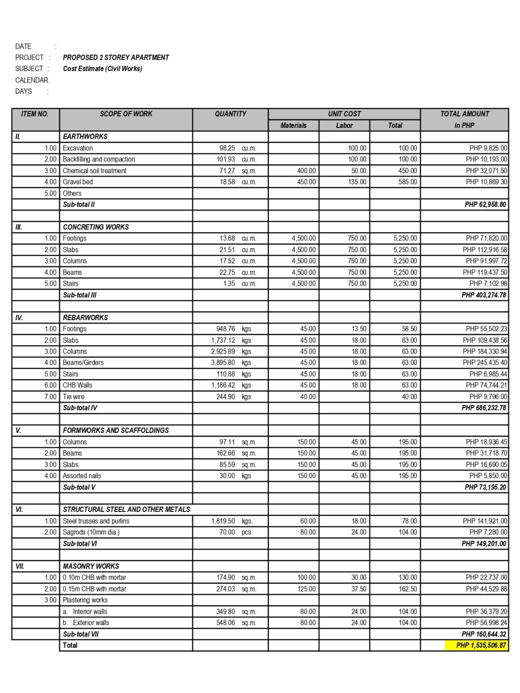
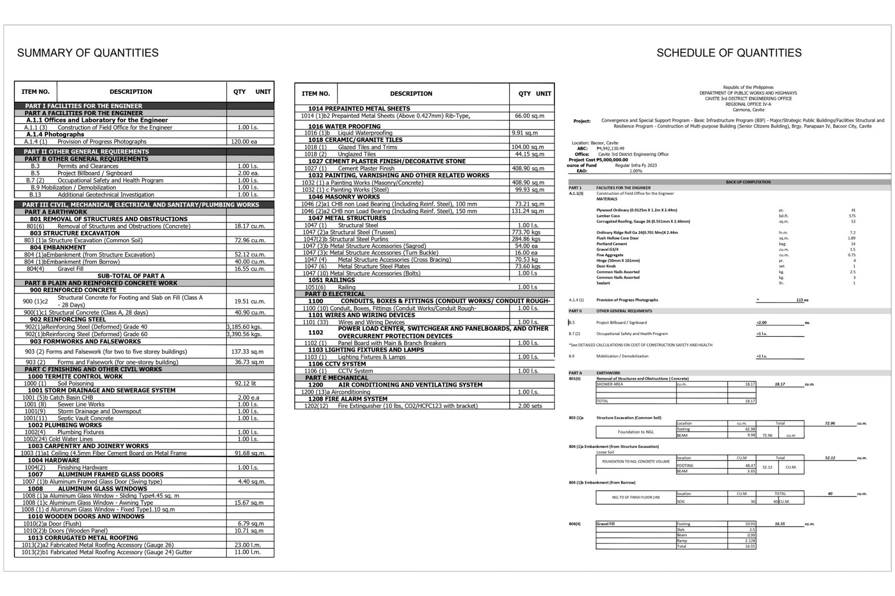
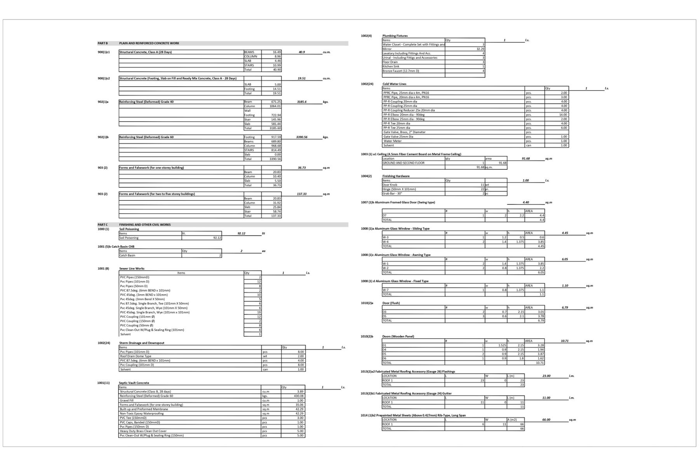
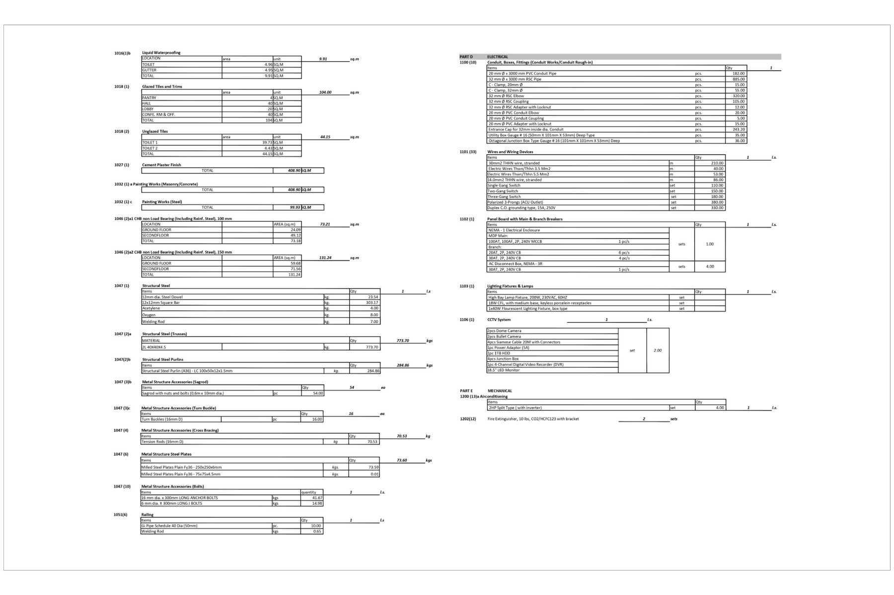

Quantity Takeoffs
Measured quantities from construction and architectural drawings.
CIVIL ENGINEER · CONSTRUCTION ESTIMATOR
I support builders and contractors with quantity takeoffs, BOQ preparation, cost estimation, and reliable remote estimating support for construction projects.
I'm a Civil Engineer with experience in construction, quantity estimation, project documentation, and site coordination. I now focus on providing remote estimating and pre-construction support to contractors and builders.
My experience includes quantity takeoffs, BOQ preparation, cost estimation, construction drawing review, tender documentation, and finishing-material takeoffs. I continue to strengthen my digital estimating capabilities through hands-on work and training with Bluebeam Revu, PlanSwift, Excel, and other construction estimating tools.
Measured quantities from construction and architectural drawings.
Organized quantity schedules to support estimating and tender preparation.
Estimating support, quantity-based costing and Excel documentation.
Reviewing drawings and project documents to identify scope and quantities.
Selected quantity takeoff and BOQ samples demonstrating my experience reviewing construction documentation, measuring quantities, and organizing cost information for project planning and tender preparation.

01 · BOQ & COST ESTIMATE
Prepared a civil works cost estimate and Bill of Quantities covering earthworks, concrete, reinforcement, formworks, structural steel, and masonry works.

02 · QUANTITY TAKEOFF & BOQ
Developed quantity takeoff and BOQ documentation covering civil, structural, architectural, finishing, plumbing, electrical, and mechanical work items.


Portfolio samples are based on previous construction and engineering work. Project information is presented for portfolio and demonstration purposes.
Bureau of Immigration, Philippines
Managed project documentation to support compliance, project tracking, and reporting. Conducted site inspections, coordinated with contractors and project teams, reviewed contractor testing and reports against specifications, and prepared DUPA and TOR for tender and bidding processes. Supported technical evaluation of bidders and project planning activities.
DPWH Cavite 3rd DEO, Philippines
Prepared architectural and plumbing design concepts including POW and ABC, developed detailed engineering drawings and construction documentation, and produced BOQ for cost estimation and tender requirements. Conducted site validation, coordinated with clients on project scope, and provided remote support in documentation and project coordination.
Callmax Solutions Inc. (Remote)
Performed quantity takeoffs for finishing materials to support cost estimation, reviewed estimates for accuracy and quality control, and prepared reports and coordinated with clients remotely.
Quantity takeoffs, BOQ preparation, cost estimation, quantity verification, and finishing-material takeoffs.
Construction drawing review, scope review, tender documentation, quantity checking, and preparation of project cost information.
Construction documentation, site validation, contractor coordination, project monitoring, and organized project reporting.
Download my full CV to review my construction estimating experience, technical skill set, and project history.
Download CVDeveloping proficiency in digital quantity takeoff and estimating workflows, with ongoing hands-on training in Bluebeam Revu and experience using PlanSwift, Excel, AutoCAD, and Google Workspace for construction documentation and project support.
08 / CONTACT
I'm available to support builders and contractors with quantity takeoffs, BOQ preparation, estimating, and remote construction support.